CONCEPT✦AI IMAGE✦MOTION✦EDIT✦URBANVIBE✦L'ESSENCE PUR✦AERON Z1✦AI IS THE TOOL✦DIRECTION IS THE DIFFERENCE✦CONCEPT✦AI IMAGE✦MOTION✦EDIT✦URBANVIBE✦L'ESSENCE PUR✦AERON Z1✦AI IS THE TOOL✦DIRECTION IS THE DIFFERENCE✦
02 / WHO WE ARE
MOTIONARY
WE CREATE
VISUALS THAT
MOVE BRANDS.
MOTIONARY는 김종명이 직접 기획·디렉션·제작하는
Personal Portfolio Studio입니다.
Concept에서 Image,
Image에서 Motion,
Motion에서 Final Film까지.
단순히 생성하는 것이 아니라
브랜드의 방향을 정의하고,
결과를 검토하고 수정하며
실제 광고 콘텐츠로 완성합니다.
순수함과 절제된 럭셔리 무드를
부드러운 빛, 섬세한 질감과
미니멀한 화면 구성으로 표현한
Premium Beauty Campaign.
ROLE
Creative Direction
AI Visual
Visual Refinement
Editing
OUTPUT
Key Visuals
40 sec Brand Film
Case Study
03 / AI TECH COMMERCIAL
ZERO GRAVITY / AERON Z1
ESCAPE THE NOISE. ENTER THE SOUND.
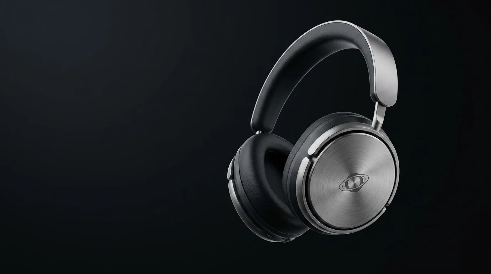
ZERO GRAVITY HERO / 01
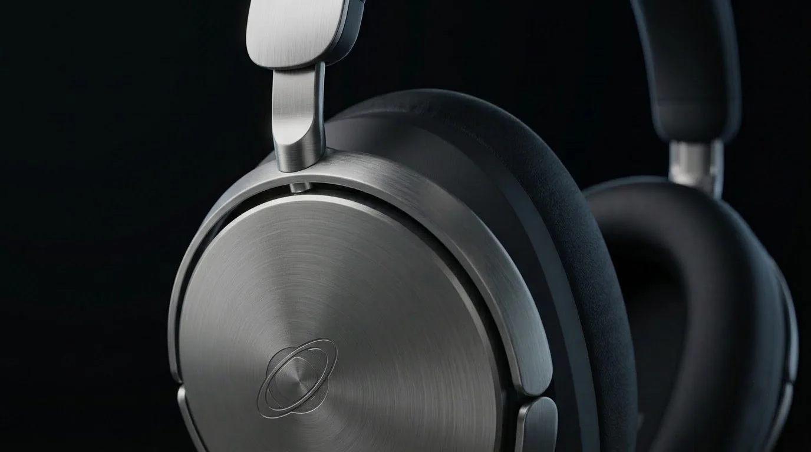
ENGINEERING / 02
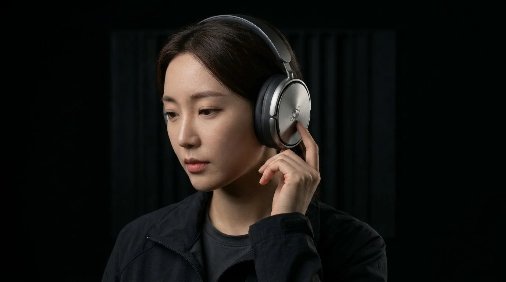
ENTER THE SOUND / 03
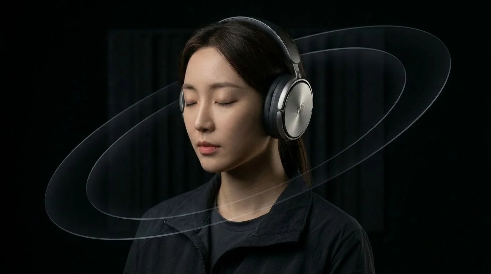
SPATIAL X / 04
PROJECT
Spatial Audio 경험을 ZERO GRAVITY라는 시각적 메타포로 재해석한
32초 Premium Tech Product Commercial.
ROLE
Creative Direction
Prompt Design
AI Motion
Editing & Sound Design
OUTPUT
Product Master System
32 sec Main Film
Client Brief Case Study
05 / CASE STUDY
Behind the
final frame.
생성 결과를 검토하고 문제를 정의한 뒤,
프롬프트·구도·모션을 다시 설계합니다.
완성도는 생성 횟수가 아니라 디렉션과 판단에서 만들어집니다.
CASE 01 / URBANVIBE
MOTION
CONSISTENCY
01
BEFORE
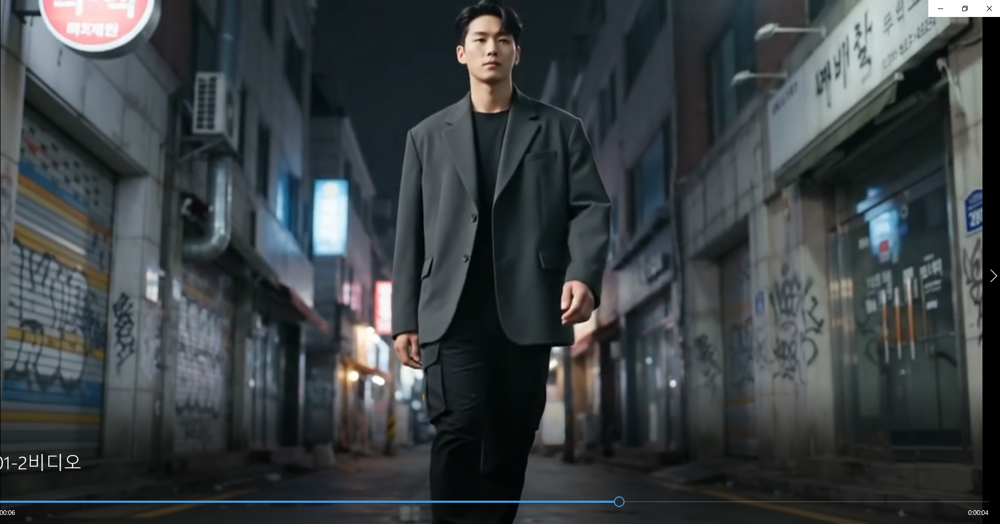
→
AFTER
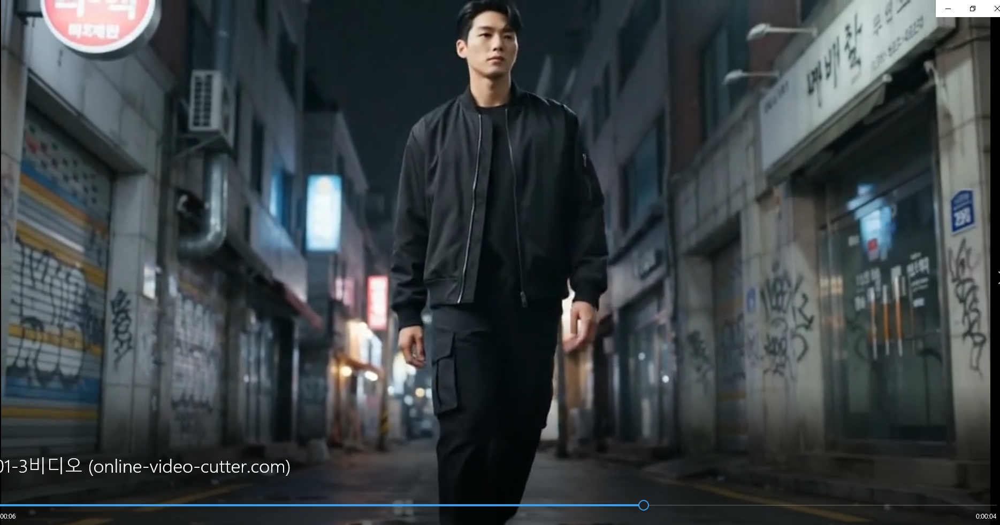
AI MOTION REFINEMENT
Before에서는 인물과 도시 배경의 존재감에 비해
URBANVIBE를 인식할 수 있는 브랜드 단서가 약했습니다.
After에서는 의상 그래픽과 제품 노출이 자연스럽게 읽히도록
포즈·프레이밍·시선 흐름을 다시 조정해
인물의 움직임 안에서도 브랜드가 먼저 기억되는 장면으로 정리했습니다.
CASE 02 / L'ESSENCE PUR
PRODUCT FIDELITY
& BRAND CONSISTENCY
02
BEFORE
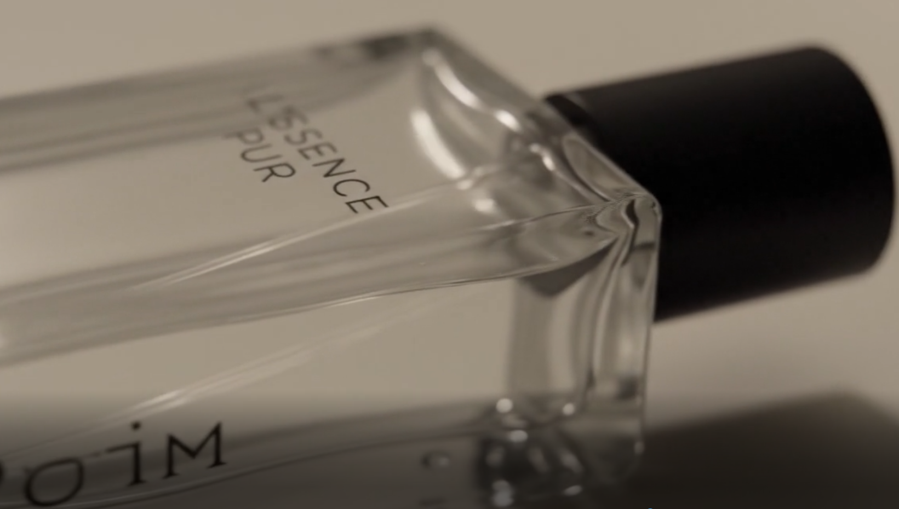
→
AFTER
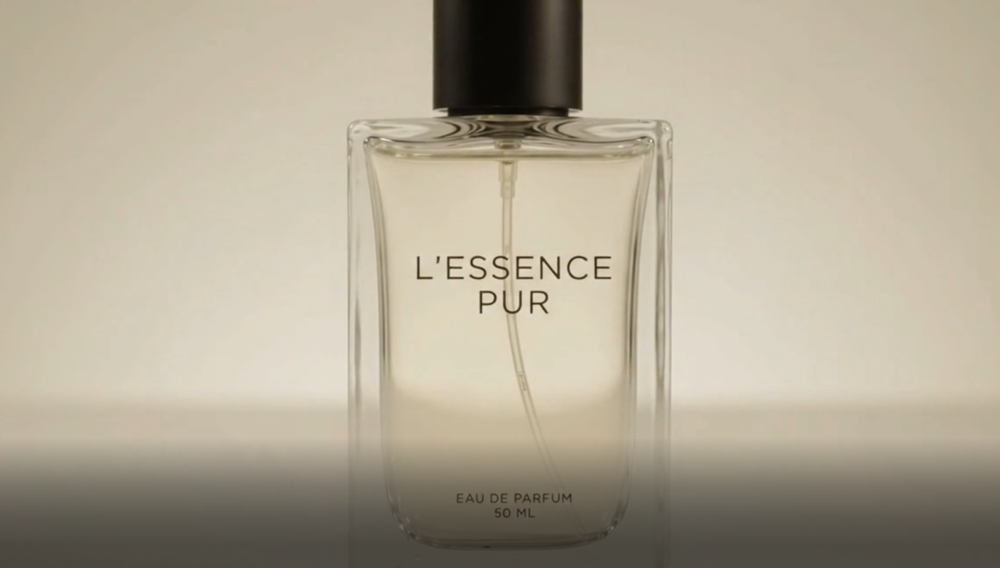
AI PRODUCT REFINEMENT
Before에서는 기울어진 제품 각도와 가까운 프레이밍 때문에
향수병의 정면 실루엣과 라벨 정보가 안정적으로 읽히지 않았습니다.
After에서는 병을 정면 중심축에 고정하고 캡·라벨·제품 비율을 유지한 채
카메라와 조명만 절제해 L'ESSENCE PUR의 Product Fidelity가
명확하게 보이는 Hero Shot으로 정리했습니다.
CASE 03 / AERON Z1
PRODUCT-FIRST ITERATION
03
BEFORE
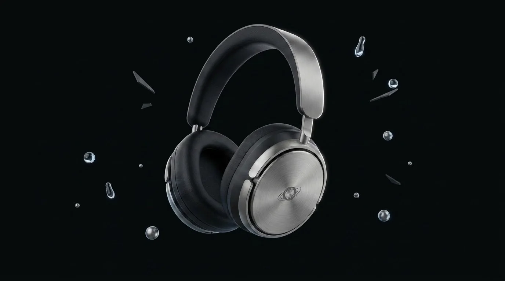
→
FINAL
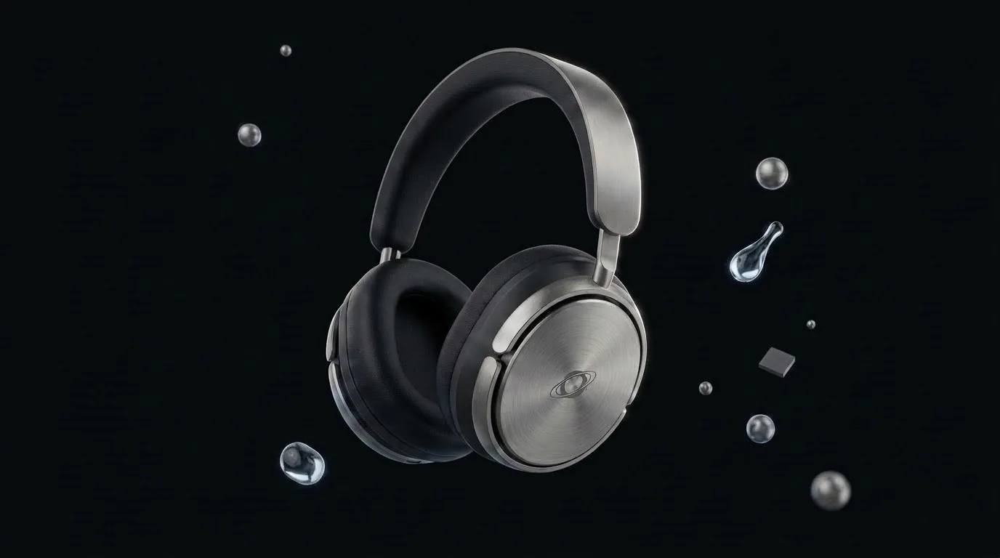
AI VISUAL REFINEMENT
무중력 효과가 제품보다 먼저 읽히던 V1에서 주변 요소만 단계적으로 줄이고
AERON Z1의 형태와 핵심 물방울은 잠근 채 수정했습니다.
최종안은 Effect-first가 아닌 Product-first의 시선 구조로 정리했습니다.
06 / PROCESS
EIGHT STEPS,
ONE DIRECTION.
생성 횟수를 늘리는 대신, 각 단계에서 무엇을 선택하고
무엇을 수정할지 판단해 하나의 Final Film으로 연결합니다.
01 → 08IDEA TO FILM.
Brief부터 Edit까지 같은 방향을 유지하는 것이 MOTIONARY의 제작 방식입니다.
도시의 움직임, 패션,
제품과 라이프스타일을
AI 이미지와 영상으로 확장한
Urban Lifestyle Brand Campaign.
02
PROJECT OVERVIEW
도시의 리듬을
하나의 브랜드 경험으로.
URBANVIBE는 패션,
제품, 액세서리와 도시 문화를
하나의 라이프스타일 경험으로
확장한 가상의 브랜드입니다.
BRAND
URBANVIBE
ROLE
Concept & Creative Direction
Prompt Design & AI Generation
Select & Visual Refinement
Motion Design & Editing
OUTPUT
Key Visual System
4 AI Motion Sequences
40 sec Final Film
MY ROLE / CREATOR DECISIONS
AI가 만든 결과를 그대로 사용하지 않고, 아래 기준으로 선택·수정·연결했습니다.
SELECT
제품 로고와 Neon Lime 요소가 읽히고, 이전 컷의 인물 방향과 자연스럽게 연결되는 결과만 선별했습니다.
REFINE
제품 노출이 약한 컷은 인물 포즈·카메라 앵글·제품 비중을 다시 설계해 재생성했습니다.
MOTION
저각도 워킹, 제품 Hero, 패션 디테일처럼 컷마다 카메라의 목적을 분리해 장면의 역할을 명확히 했습니다.
EDIT
4개의 Motion Sequence를 40초 흐름으로 재배치하고 컷 길이·전환·사운드 밸런스를 최종 조정했습니다.
03
CREATIVE DIRECTION
CORE CONCEPT
CITY × MOVEMENT
× LIFESTYLE
Black / Charcoal을 중심으로
Neon Lime을 제한적인 Accent로 사용해
Urban Lifestyle Campaign의
Visual System을 구성했습니다.
04
MOODBOARD
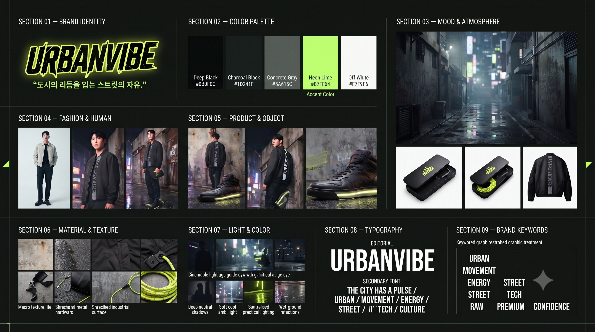
05
KEY VISUALS
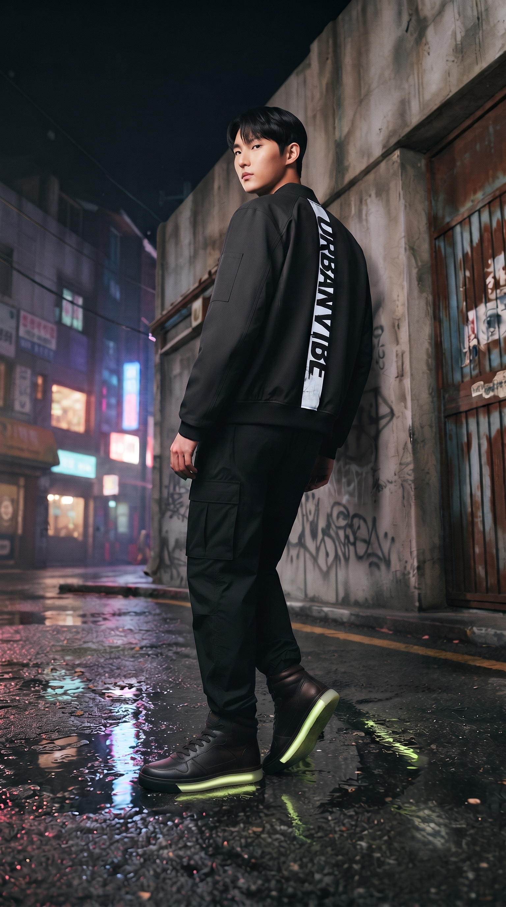
06
MOTION STORYBOARD
40 SEC / 5 KEY BEATS
도시의 공간에서 시작해 패션, 제품, 움직임을 거쳐 브랜드 엔드 프레임으로 수렴하는 흐름입니다.
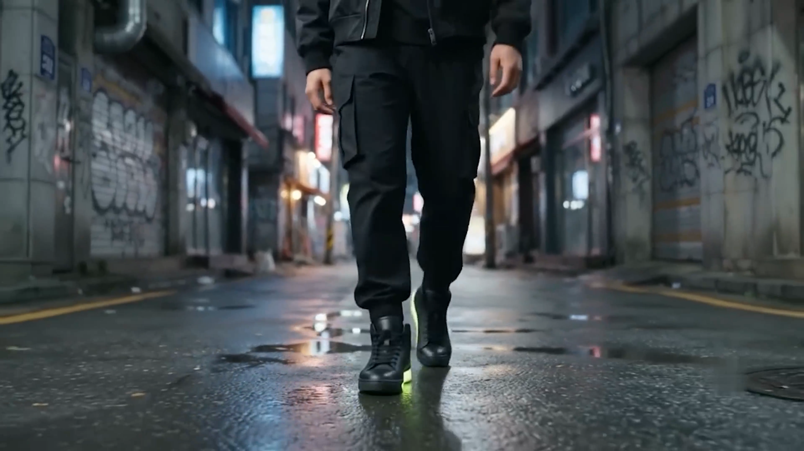
01 / ENVIRONMENT00–08 SEC
젖은 도심 골목과 로우 앵글 워킹으로 도시의 리듬과 브랜드 세계관을 연다.
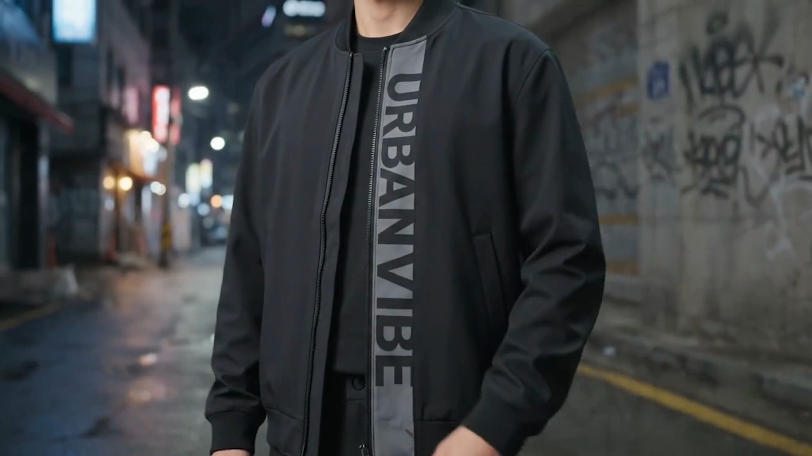
02 / FASHION08–16 SEC
의상의 그래픽과 소재를 클로즈업해 Urban Lifestyle의 태도와 스타일을 각인한다.
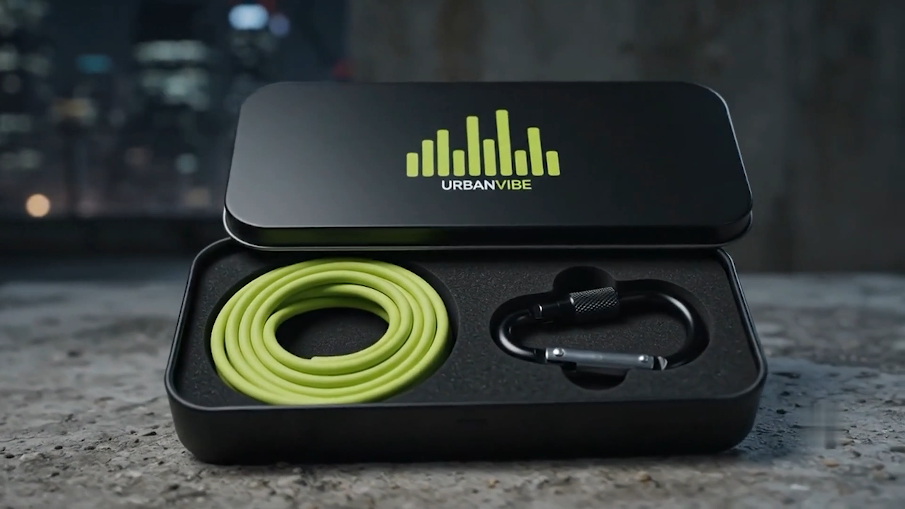
03 / PRODUCT16–24 SEC
Neon Lime 포인트가 살아 있는 제품 패키지를 Hero Shot으로 전환해 제품 정체성을 선명하게 보여준다.
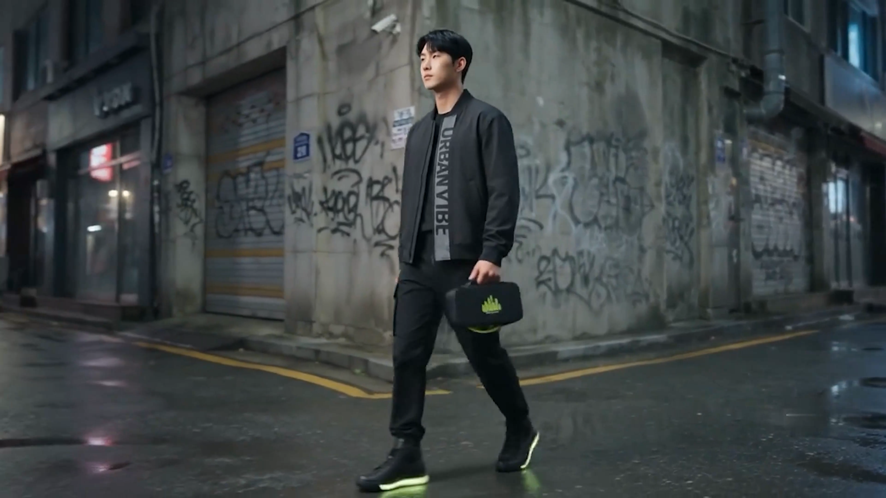
04 / MOVEMENT24–32 SEC
인물의 이동과 가방의 움직임을 따라가며 패션과 제품을 하나의 도시 경험으로 연결한다.
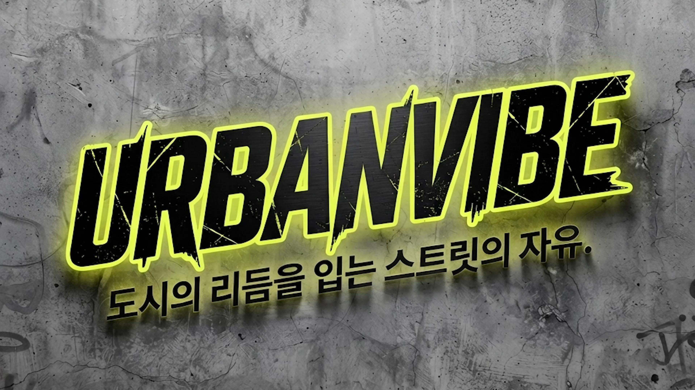
05 / END FRAME32–40 SEC
콘크리트 텍스처 위 URBANVIBE 로고와 메시지로 캠페인의 에너지를 강하게 마감한다.
07
EDITING
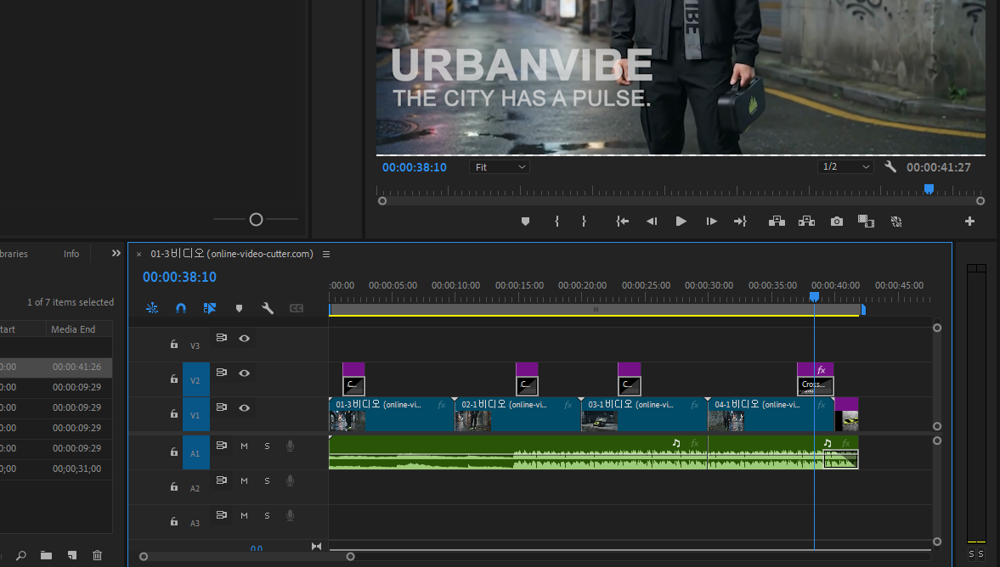
4개의 AI-generated motion sequence를 40초 브랜드 필름으로 재구성하고,
컷의 리듬·전환·사운드 밸런스를 Premiere Pro에서 최종 조정했습니다.
CREATOR DECISION
제품 Hero Shot이 가장 오래 기억되도록 컷 길이를 확보하고, 워킹 장면은 음악의 리듬에 맞춰 더 짧게 재배치했습니다.
08
TROUBLESHOOTING
BEFORE
→
AFTER
PROBLEM
Before에서는 인물과 도시 배경은 충분히 강했지만,
의상에서 URBANVIBE를 즉시 인식할 수 있는 브랜드 단서가 약했습니다.
결과적으로 장면 자체는 분위기가 있었지만
패션 캠페인 Key Visual로서 브랜드 기억점이 부족했습니다.
SOLUTION
모델과 골목 환경은 유지하면서 의상 전면에
URBANVIBE 그래픽이 자연스럽게 읽히도록 스타일링을 재설계했습니다.
몸의 각도와 카메라 프레이밍을 조정하고,
Neon Lime 슈즈 디테일을 보조 Accent로 유지해
브랜드와 인물의 시선 우선순위를 다시 정리했습니다.
RESULT
After에서는 인물의 움직임과 도시 분위기를 유지하면서도
URBANVIBE 타이포그래피가 명확한 브랜드 식별점으로 작동합니다.
패션·인물·환경이 한 방향으로 정리되어
이후 Motion Sequence에서도 일관된 Brand Identity를
유지할 수 있는 기준 컷을 확보했습니다.
WHAT I CONTROLLED
브랜드 그래픽의 가독성, 모델의 몸 방향, 프레이밍, Neon Lime Accent의 비중을 직접 판단해 패션 장면 안에서 URBANVIBE가 먼저 읽히도록 기준을 다시 잡았습니다.
절제된 럭셔리와 순수한 아름다움을
AI 이미지, 비주얼 디렉션과 편집으로 확장한
Premium Beauty Brand Campaign.
02
PROJECT OVERVIEW
순수한 아름다움을
하나의 감각적인 브랜드 경험으로.
L'ESSENCE PUR는 깨끗한 원료의 이미지와
절제된 프리미엄 무드를 결합해
제품의 본질과 감성적 가치를 전달하도록 설계한
가상의 뷰티 브랜드 캠페인입니다.
BRAND
L'ESSENCE PUR
ROLE
Concept & Creative Direction
Prompt Design & AI Generation
Select & Product Refinement
Motion Design & Editing
OUTPUT
Key Visual System
5 AI Motion Sequences
40 sec Final Film
MY ROLE / CREATOR DECISIONS
제품 일관성과 감정 흐름을 유지하기 위해 생성 결과를 아래 기준으로 통제했습니다.
SELECT
향수병 비율·라벨 위치·모델 얼굴과 헤어의 연속성이 유지되는 결과만 선별했습니다.
REFINE
과도한 제품 크기와 스튜디오 조명을 줄이고 Warm Ivory 여백과 Soft Backlight 중심으로 다시 구성했습니다.
MOTION
제품 자체의 회전·변형을 제한하고 움직임을 카메라 Push-in, 자연광, 커튼과 모델의 미세 동작에 집중했습니다.
EDIT
5개의 8초 클립을 40초 광고 흐름으로 연결하고 BGM·SFX·타이포그래피의 타이밍을 재조정했습니다.
03
CREATIVE DIRECTION
CORE CONCEPT
PURITY × LIGHT
× TIMELESS
밝은 뉴트럴 톤과 부드러운 자연광,
섬세한 피부와 제품 질감을 중심으로
과장되지 않은 Premium Beauty Visual System을
구성했습니다.
04
MOODBOARD
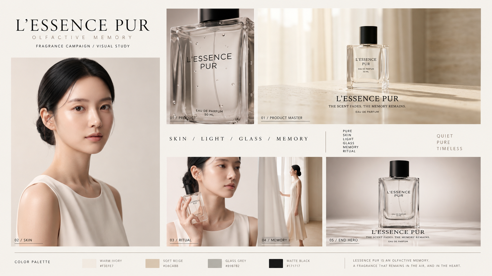
05
KEY VISUALS
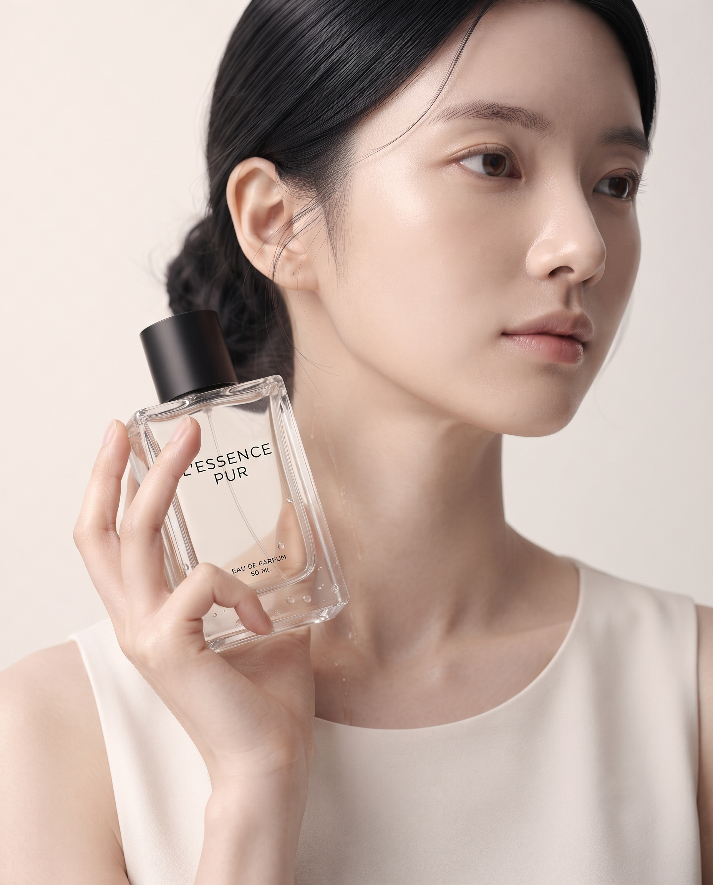
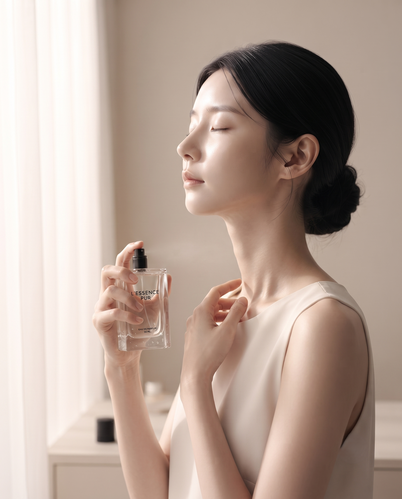
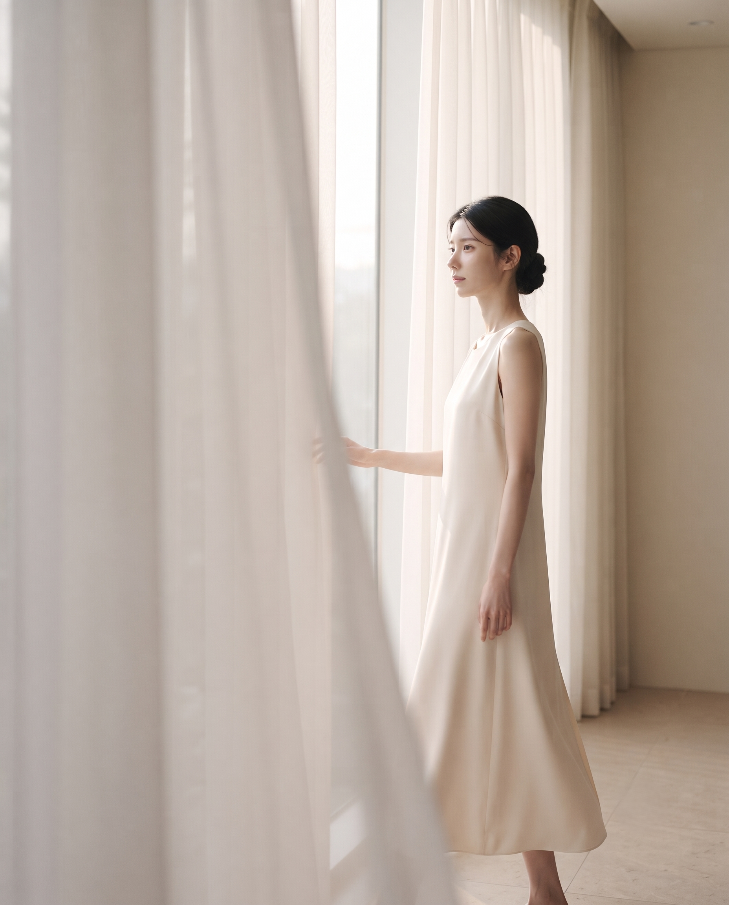
06
MOTION STORYBOARD
40 SEC / 5 KEY BEATS
제품의 순수한 존재감에서 시작해 피부, 향을 사용하는 의식, 기억의 잔상으로 확장한 뒤 Hero Product로 돌아오는 구조입니다.
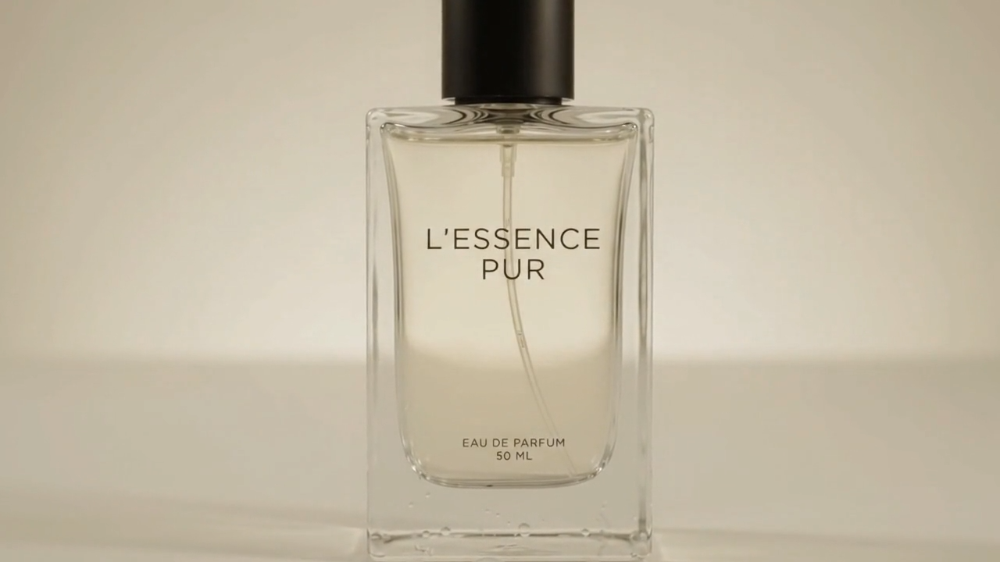
01 / PRODUCT00–08 SEC
부드러운 아이보리 빛 속 향수병을 정면으로 제시해 브랜드의 순수함과 절제된 첫인상을 만든다.
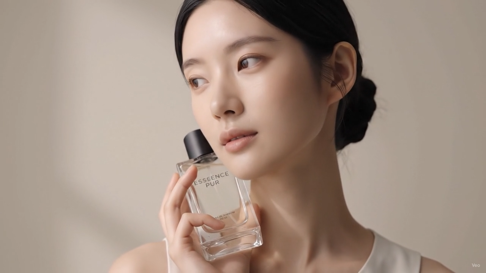
02 / SKIN08–16 SEC
피부와 유리병의 섬세한 질감을 가까이 담아 향을 촉각적인 Beauty Experience로 확장한다.
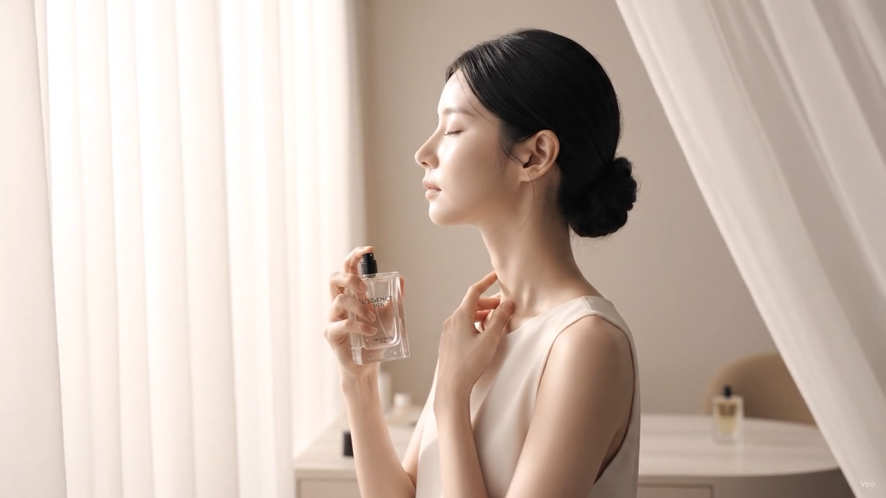
03 / RITUAL16–24 SEC
자연광 아래 향을 뿌리는 조용한 동작으로 일상 속 개인적인 향의 의식을 표현한다.
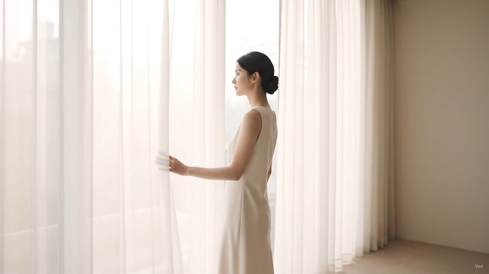
04 / MEMORY24–32 SEC
커튼과 빛 사이에 머무는 인물의 여백으로 향이 지나간 뒤 남는 감정과 기억을 시각화한다.
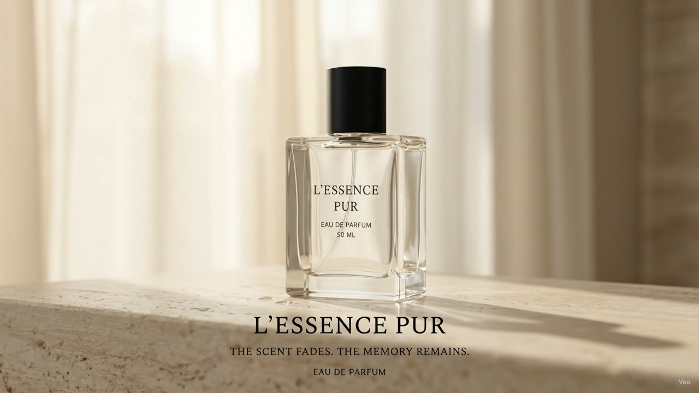
05 / END HERO32–40 SEC
따뜻한 빛과 긴 그림자 속 Hero Product, “THE SCENT FADES. THE MEMORY REMAINS.” 메시지로 마무리한다.
07
EDITING
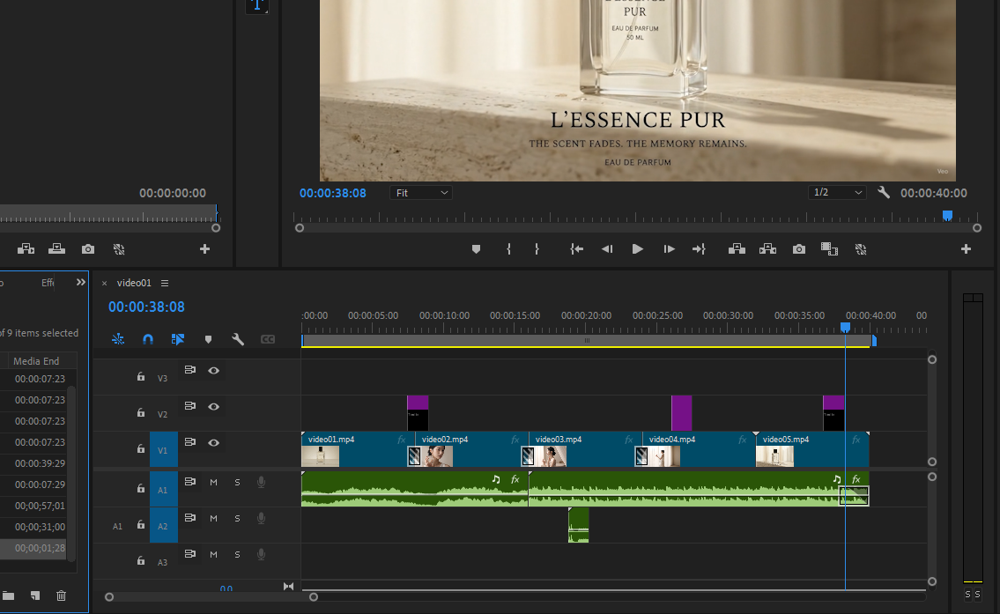
5개의 8초 AI motion clip을 하나의 40초 광고 흐름으로 연결하고,
BGM·SFX·타이포그래피와 장면 전환을 Premiere Pro에서 최종 정리했습니다.
CREATOR DECISION
제품 → 인물 → Ritual → Memory → End Hero의 감정 흐름이 깨지지 않도록 컷 순서와 호흡을 우선하고, 효과음은 최소화했습니다.
08
TROUBLESHOOTING
CASE 01 / AI PRODUCT CONTROL
PRODUCT FIDELITY &
BRAND CONSISTENCY
BEFORE
→
AFTER
PROBLEM
Before에서는 향수병이 기울어진 각도와 가까운 프레이밍으로
표현되어 정면 실루엣과 라벨 정보가 한눈에 읽히지 않았습니다.
캡·유리 모서리·라벨 위치가 장면마다 다르게 느껴져
L'ESSENCE PUR의 Product Identity를
안정적으로 유지하기 어려웠습니다.
SOLUTION
향수병을 정면 중심축에 고정하고
Bottle Ratio, Matte Black Cap, Glass Edge,
Label Position을 변하지 않는 기준 요소로 설정했습니다.
제품 자체의 회전과 변형은 제한하고,
움직임은 미세한 Camera Push-in과 자연광 변화에만 집중했습니다.
RESULT
After에서는 향수병이 정면에서 안정적으로 서고
제품 비율과 라벨 가독성이 명확하게 유지됩니다.
최소한의 카메라 움직임과 부드러운 조명 변화만으로 깊이를 만들어
브랜드 일관성을 훼손하지 않는 Premium Product
Hero Shot의 기준을 확보했습니다.
CASE 02 / VISUAL REFINEMENT
FROM PRODUCT SHOT
TO CAMPAIGN MASTER
BEFORE
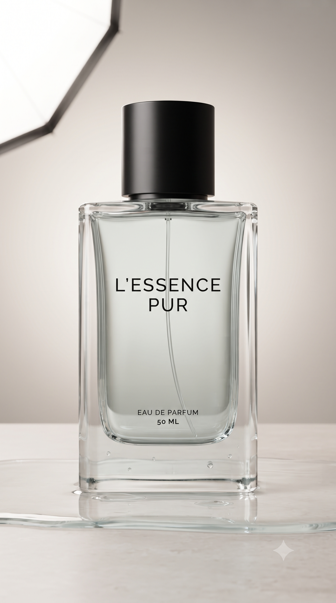
→
AFTER
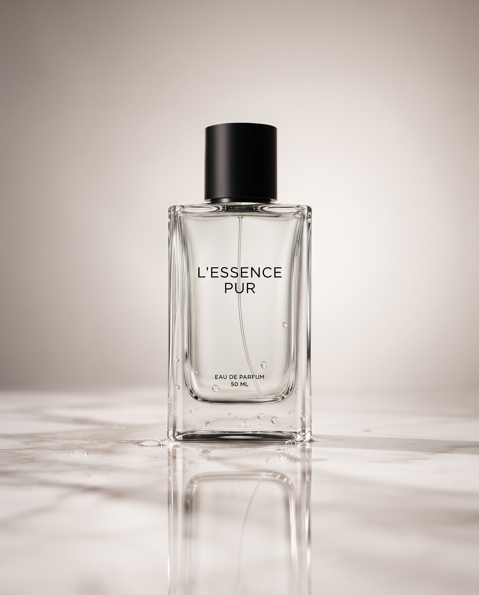
PROBLEM
Before에서는 향수병 자체는 선명했지만
제품이 화면을 크게 차지하고 스튜디오 조명 장치가 직접 노출되어
촬영 테스트컷에 가까운 인상을 주었습니다.
시선이 제품과 조명 장치로 분산되면서
L'ESSENCE PUR 특유의 Quiet Luxury와 여백의 감성이 약했습니다.
SOLUTION
제품 디자인과 라벨은 유지하되 화면에서 차지하는 비중을 줄이고
노출된 스튜디오 조명 요소를 제거했습니다.
Warm Ivory의 Negative Space와 Soft Backlight,
바닥 Reflection을 중심으로 Composition을 다시 설계해
제품보다 공간의 분위기가 먼저 과장되지 않도록 정리했습니다.
RESULT
After에서는 제품이 넓은 여백 안에서 안정적으로 중심을 잡고,
자연스러운 반사와 부드러운 빛이 향수병의 투명감을 보조합니다.
이 컷을 MASTER PRODUCT VISUAL로 확정해
이후 Product Macro, Model Visual, Ritual Scene,
Motion까지 동일한 색감·조명·공간감으로 확장했습니다.
WHAT I CONTROLLED
Case 01에서는 제품 비율·캡·라벨·정면축을, Case 02에서는 제품 크기·Negative Space·조명 방향·Reflection을 고정 기준으로 두고 기준을 벗어난 결과는 제외하거나 다시 생성했습니다.